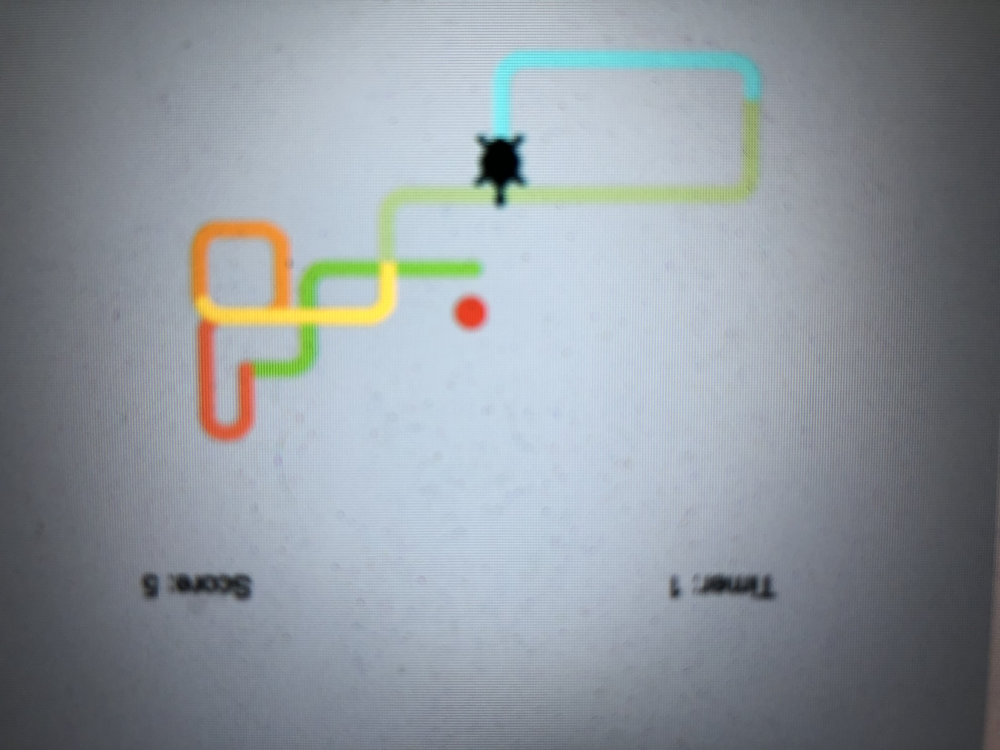

Home
Portfolio
About Me
This is my Portfolio Page!

.png)
An underwater ocean scene consisting of various plants and sea animals. A fish and shark interact with each other because when the fish swims into the shark, it eats the shark and becomes a stronger fish.

In-depth paragraph: We first import the turtle and the random module. After that is complete, we establish the screen’s background color and our pensize and pen color, along with the turtle shape and its initial size. We then establish what constitutes an apple in our game, making it a red circle. We also add in a color list. Then we move onto making the scoring system, starting it at 0 and establishing the score’s location on the screen in the upper right corner. Next, we set up a timer which runs for a total of 30 seconds and appears in the upper left corner. After we establish that, we create the process that enables the apple to randomly appear on the map after the collision with the turtle, as well as how much the turtle grows after eating it (0.2). Past that, we enable the turtle’s trail to change color and the game to end once the timer runs out. Finally, we established the arrow key movements that allow the turtle to be moved in the first place.
.jpg)
https://drive.google.com/file/d/1wYHw9Yrc0ixv1IU-qHyFgJkyPnSL0V14/view?usp=sharing
We made an animation where a rocket flies into sapce. When the user answers yes to "are you ready to fly?", the rocket flies and when a user answers no, the rocket blows up>

https://scratch.mit.edu/projects/464779073
For the Scratch project we made a knock-off version of Papa's Pizzeria. A costumer has an order which is influenced by the difficulty setting you pick in the beginning. You add toppings to their specifications and cook the pizza till the screen says it is cooked. Once it is done cooking, the pizza is cut and finished.